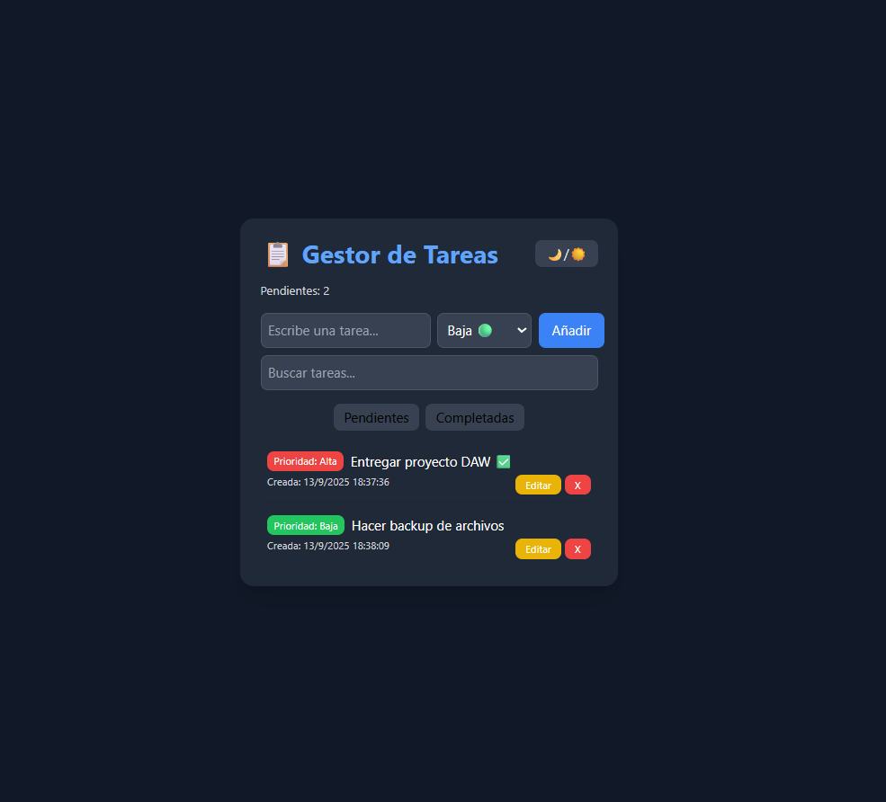

Proyectos Destacados
Gestor de Tareas Avanzado
Aplicación web interactiva para organizar tareas con prioridad, filtros, edición, búsqueda y contador de pendientes.
- Añadir tareas con Enter o botón
- Prioridad y resaltado automático
- Orden inteligente y dinámico
- Editar y borrar tareas con botones
- Filtros y búsqueda en tiempo real
- Contador de tareas pendientes
- Modo oscuro